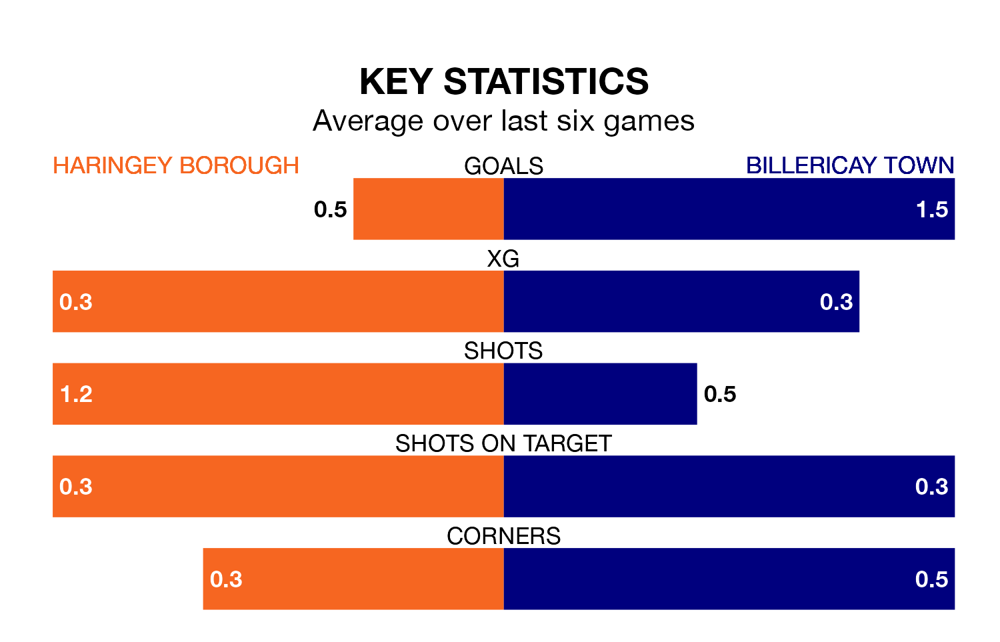

Billericay Town are strong favourites to take all three points despite Haringey Borough's home advantage in Saturday's match at Coles Park.
*Betting Company* are offering odds of 1.6 on Billericay sealing the win, with the visitors sitting seventh in the Isthmian Premier Division table.
Haringey, who are 20th in the league and 37 points behind Billericay, are priced at 4 to win. A draw is set at 4.2.
With 28 goals in 37 games so far this season, Haringey are the league's lowest scorers with 0.8 goals per game. And they are conceding more than average, letting in 75 goals at a rate of 2.0 per game.
Billericay, meanwhile, are average scorers, with 1.6 goals per game. They have conceded 1.2 goals per game.
Borough are in disappointing form in the Isthmian Premier Division, with two wins and four losses from their last six games.
With two wins and a draw over that period, Town's form is slightly better – they have taken seven points from 18, compared to the hosts' six.
In the last five years, Haringey and Billericay have played each other on four occasions. Haringey won one of them and Billericay the other.
On average, Haringey scored 1.0 goal and Billericay 2.5 in those matches.
Their last meeting was on December 16, when Haringey won 2-1 away.
Haringey's last match was on Monday, a 5-0 loss against Hashtag United.
Billericay beat Concord Rangers 2-0 last time out, also on Monday.
Updated: 16:41 (UTC), 04/04/24